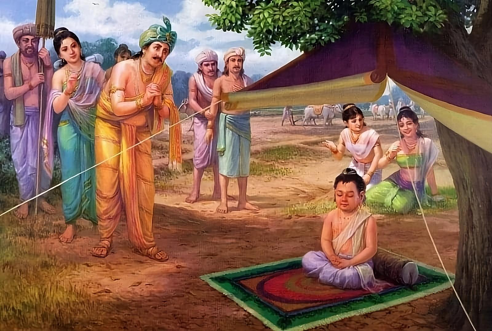

Namo tassa bhagavato arahato sammāsambuddhassa
Homage to the Most Venerable One, the Arhat, the Self-Awakened One
Namo tassa bhagavato arahato sammāsambuddhassa
Homage to the Most Venerable One, the Arhat, the Self-Awakened One
Namo tassa bhagavato arahato sammāsambuddhassa
Homage to the Most Venerable One, the Arhat, the Self-Awakened One
Sabbapāpassa akaraṇaṃ,
Do no evil
Kusalassa upasampadā ;
Accumulate good things
Sacitta pariyo dapanaṃ,
Encourage your mind to comprehend
Etaṃ buddhāna sāsanaṃ
This is Buddha's teaching.
The picture shows how, at the festival of the first furrow, 5-year-old Siddhartha, sitting under the shade of a tree, spontaneously entered into jhāna (deep meditative concentration).
The day arrived when King Suddhodana was to perform the ploughing ceremony, which was an annual seasonal festival. On that day, the entire royal city of Kapilavatthu was decorated as the abode of devas. All the inhabitants of the city, including the workers, were assembled in the palace square, dressed in their best attire and adorned with flowers. In the fields where the ploughing ceremony was to take place, 1,000 ploughs were kept ready, of which 800 were for the raja and his ministers. The 799 ploughs that the ministers were to operate were adorned with silver ornaments. The plough that the raja was to operate was completely adorned with red gold.
When Raja Suddhodana left the royal city with a large retinue of ministers, courtiers, bodyguards and other retinues, he brought his son Bodhisatta to the ceremonial place and kept him under the delightfully cool shade of a large pink apple tree. The ground beneath the tree was covered with the finest velvet carpet, on which the royal child was placed. And over him was fixed a crimson velvet canopy, embroidered with gold and silver stars. Then the Raja donned the royal working robes usually worn for the ploughing ceremony. Accompanied by his ministers and courtiers, he proceeded to the field where the ceremony was to take place.
Arriving at the field, Raja Suddhodana sat on the seat of a golden plough specially prepared for him. The 799 courtiers who attended the ceremony also rode and drove their silver ploughs. The remaining 200 ploughs were operated by 200 workers from the royal farm, who carefully ploughed the field, moving back and forth across the field many times. Raja Suddhodana ploughed the field only once to bring the blessings of the ceremony, riding across the field from one side to the other.
The nannies and guards who were assigned to look after the prince left Siddhartha and went outside the area where he was: "Let's see an interesting spectacle when our master performs the plowing ceremony."
Meanwhile, Siddhartha, looking around and seeing no one, sat down cross-legged, quietly and calmly. He then practiced breathing meditation (ānāpāna), concentrating on the inhalation and exhalation, and thereby achieved the first absorption of the form realm (rūpāvacara-jhāna).
It should be understood that the Bodhisatta achieved the first absorption (rūpāvacara-jhāna) in a short time as a result of habitual practice (ānāpāna) over many lifetimes.
The attendants, having left their charge, amused themselves for quite a long time, loitering here and there. All the trees, with the exception of the pink apple tree under which the Bodhisatta sat, cast their shadows naturally, in accordance with the movement of the sun. When in the afternoon the shadows of the trees fell to the east, the shadow of the pink apple tree under which the prince rested did not move with the sun even after noon, strangely remaining in a round shape as before.
The nurses, finally remembering, "Oh, our lord's son is left alone," hastened back and, running to the prince, saw with their own eyes and to their amazement the prince sitting cross-legged; and they saw also this miracle (pāṭihāriya). They hastened to Suddhodana and reported, "Your Majesty, your son is sitting quietly and calmly in a certain posture. And although the shadow of other trees has shifted with the changing position of the sun, the shadow of the pink apple tree under which your son is sitting remains unchanged even after midday, maintaining its round shape."
Raja Suddhodana arrived at the place and quietly approached Siddhartha. Having seen with his own eyes the two strange miracles, he said, "Noble son, I, your father, greet you for the second time," and bowed to his son with love and adoration.
In the Pali Canon, in some suttas, the Buddha mentions this episode of his attainment of jhāna in early childhood.
Here is an excerpt from Majjhima Nikāya 36:
First, the Buddha lists all the ascetic practices he had undertaken before Awakening, including his apprenticeship with Āḷāra Kālāma and Uddaka Rāmaputta.
Further, he says:
"But by these painful austerities I have not attained any superhuman state, any distinction in knowledge and vision worthy of the noble. Could there be another path to enlightenment?"
Recollection of entering jhāna
I thought, “I remember once, when my father of the Sakya clan was working, I was sitting in the cool shade of a myrtle tree, and then, detached from sensual pleasures, detached from unwholesome states [of the mind], I entered and dwelt in the first jhāna, which was accompanied by applying and maintaining [the mind on the object of meditation] with the rapture and pleasure that arose from [this] detachment. Could this be the path to enlightenment?” Following this memory came the insight, “This is indeed the path to enlightenment!” I thought, “So why am I afraid of this pleasure [jhāna], which has nothing to do with either sensual pleasure or unwholesome states [of the mind]?” I thought, “I am not afraid of this pleasure, for it has nothing to do with either sensual pleasure or unwholesome states [of the mind].”
I thought, “It is not easy to attain this pleasure with such an exhausted body. What if I take some solid food – some boiled rice and porridge?” So I took some solid food – some boiled rice and porridge. At that time, the five monks who were looking after me thought, “If our hermit Gotama attains some higher state, he will tell us.” But when they saw me eating solid food – some boiled rice and porridge – they left me in disgust, thinking, “The hermit Gotama is now living in luxury. He has given up his endeavor and returned to luxury.”
And then, when I had eaten solid food and had refreshed myself, detached from sensual pleasures, detached from unwholesome states [of mind], I entered [the first jhāna] and dwelt in the first jhāna, which was accompanied by directing [the mind to the object of meditation] and holding [on it] with rapture and pleasure that arose because of [this] detachment. But such a pleasant feeling that arose in me did not flood my mind and did not remain. With the fading away of directing and holding [the mind on the object], I entered [the second jhāna] and dwelt in the second jhāna... the third... the fourth jhāna... But such a pleasant feeling that arose in me did not flood my mind and did not remain.